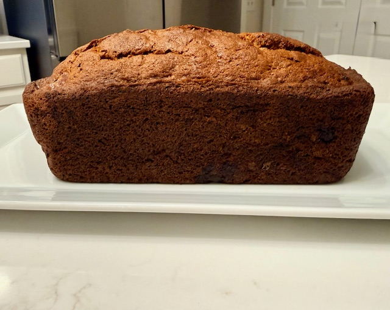
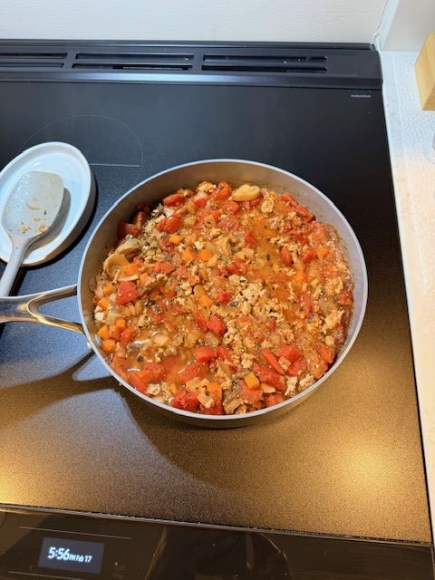

Agnolotti Dough & Filling
A hand‑worked pasta dough and simple fillings — a quiet, process‑driven recipe rooted in tradition and repetition.
Everyday dishes and seasonal meals shaped by process, place, and the rhythm of home cooking.
A curated collection of complete dishes — organized and ready to make. The recipes we return to, season after season.
A hand‑worked pasta dough and simple fillings — a quiet, process‑driven recipe rooted in tradition and repetition.

A cozy, nut‑free banana bread with big flavor, easy technique, and that unmistakable "your life is together" aroma.

This is an excellent Italian cookie that marries meringue with hazelnuts and just a hint of fennel.

This soup is extremely easy to make, great to eat, and smells amazing while making it.

This recipe is a spin on an italian classic using organinc ground turkey.